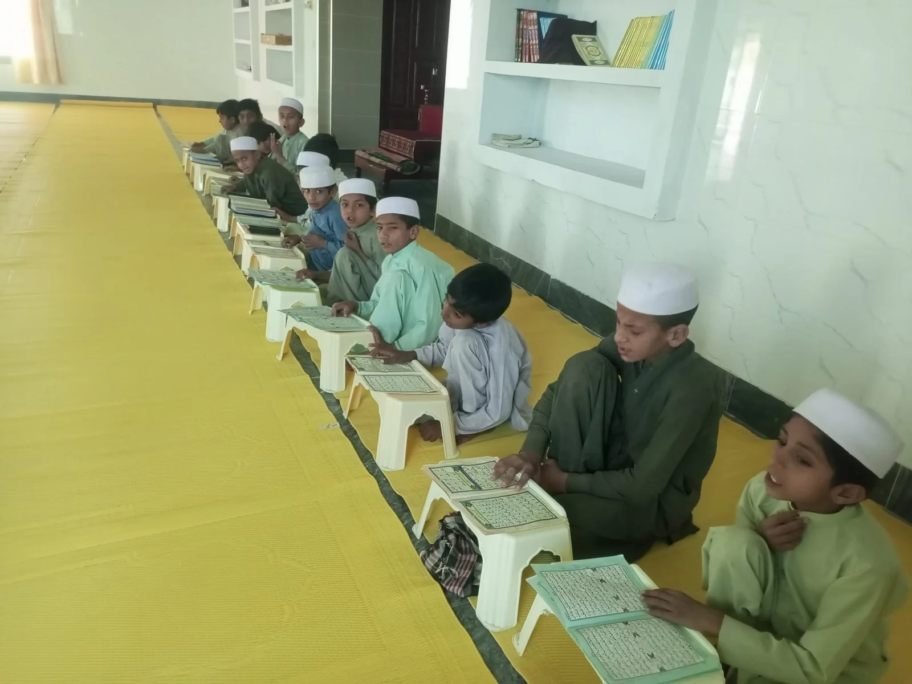
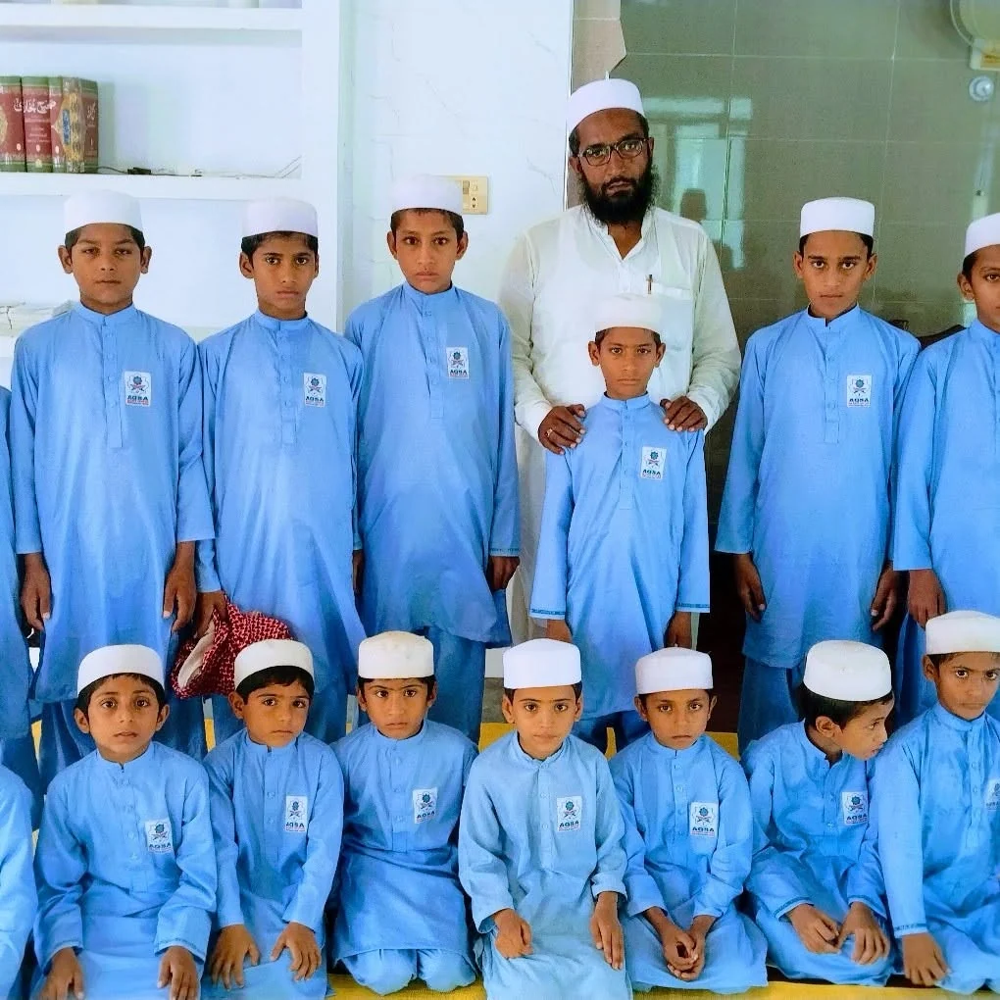
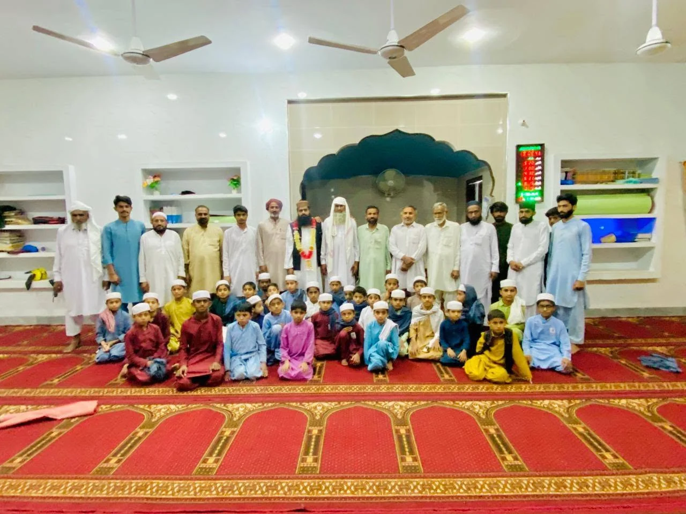

01تعلیمی شعبہ
ناظرہ قرآن
قرآنِ کریم کی درست تلاوت کی بنیادبچوں اور بچیوں کے لیے ناظرہ قرآن کی تعلیم؛ قرآنِ کریم سے تعلق کی ابتدا۔
معلومات حاصل کریں ←بچوں اور بچیوں دونوں کے لیے ناظرہ، حفظ القرآن، درسِ نظامی اور عصری تعلیم۔

بچوں اور بچیوں کے لیے ناظرہ قرآن کی تعلیم؛ قرآنِ کریم سے تعلق کی ابتدا۔
معلومات حاصل کریں ←
قرآنِ کریم کے حفظ کے ساتھ مڈل تک تعلیم، تاکہ دینی اور عصری تعلیم کا سفر ساتھ جاری رہے۔
معلومات حاصل کریں ←
درسِ نظامی کے ساتھ عصری تعلیم کا مربوط اہتمام، تاکہ طلبہ دینی علوم کے ساتھ جدید تعلیمی تقاضوں سے بھی ہم آہنگ رہیں۔
معلومات حاصل کریں ←دینی تعلیم کے ساتھ اسکول کی تعلیم کا تسلسل، بچوں اور بچیوں دونوں کے لیے۔
معلومات حاصل کریں ←حفظ القرآن کے ساتھ مڈل تک عصری تعلیم دی جاتی ہے۔
درسِ نظامی کے ساتھ عصری تعلیم کا مربوط اہتمام؛ دینی فہم اور عصری علم کی متوازن بنیاد۔
عمر، جماعت، اوقات، فیس اور داخلے کے طریقۂ کار کی درست معلومات انتظامیہ سے حاصل کیجیے۔
داخلے کے لیے رابطہ